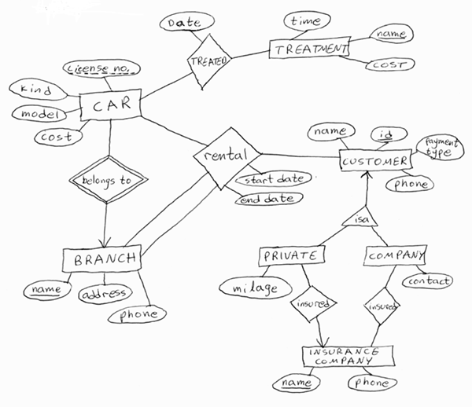
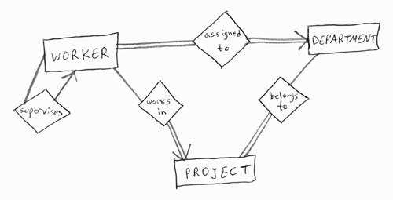

The DataBase Course
Solution of Exercise No. 1
Entity-Relationship Model
Question 1
The entity sets, relationship sets, attributes, keys and multiplicity of relationships are all defined in the diagram. The attributes given here are just examples - you may define other attributes, as long as you define a key for every entity set and store all the information explicitly mentioned in the exercise (type of payment, for example). Note that every entity set appears only once, in contrast with the network model.
The given solution is not the only correct one, of course. For example, it assumes that 'Car' is a weak entity set, identified by its license number and branch name. Cars obviously cannot be identified by license number only, since cars from different countries may have the same number, but you can add the country as an attribute to 'Car' and define { License number, Car } to be its key. The 'Belongs To' relationship will still exist then, but as a regular one. Another choice that has to be made is how to represent the 'Rental' relationship: Here, it is a relationship between four entity sets, defining the renting customer, the car, the branch from which the car was taken, and the branch to which it returned. The start and end dates of the renting are attributes of the relationship, which is many-to-many-to-many-to-many (can you tell why?). Customers are divided to private ones, for which a milage is kept for the frequent renter program, and companies, which may use more than one insurance company at once.

Question 2
Some students divided 'Worker' to 'Regular' and 'Big Boss' using an is-a relationship, in order to express the fact that all regular workers are supervised. This is a nice extension, but the following diagram qualifies as a correct and simpler solution. Attributes have been removed for clarity.

Question 3
There are two possible ways to write the relational database schema:
1. R1 = { Students } S1 = (ID Number, Name)
2. Students(ID Number, Name)We will use the second, shorter, style:
Worker (ID Number, Last Name, First Name, Job, Supervisor, Department, Project)
Department (Name, Location, Phone)
Project (Name, Description, StartDate, EndDate)
Projects_Departments (Department_Name, Project_Name)What happens to constraints after the translation? Attribute domains are kept in the relational model. The miltiplicity (many-to-one, etc.) constraints are also kept - it is visible from the translated schema that every worker may have at most one project, while every project can belong to many departments. Keys are not kept by the list of relations, and for now they're lost - although they'll be back with a vengeance in a later part of the course. Participation constraints are not kept: There is no way of saying that every project should have at least one entry in the Projects_Departments relation.
One delicate point in the translation is the supervisor attribute in worker, which is only valid if the model also supports null values - that is, values that say "nothing is stored here", meaning "this worker has no supervisor". If you assume that null values don't exist in the relational model than you have to create a relation Supervising(Worker ID, Supervisor ID) to store this data - but then, you can't be sure that every worker is assigned at most one supervisor.